Finishing Strong
In the next couple months we will be wrapping up our time at Phnom Penh Bible School, where Ryan has been teaching since we came back to Cambodia in 2021. Students who were in the first class that Ryan taught have all graduated already; students who were just starting then are now getting ready to graduate and head off.
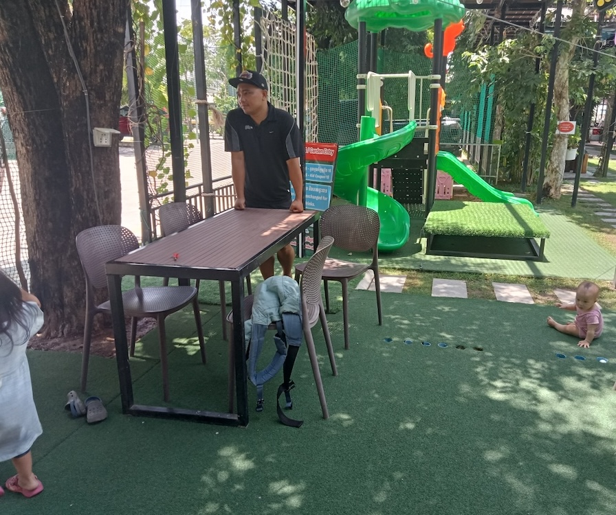 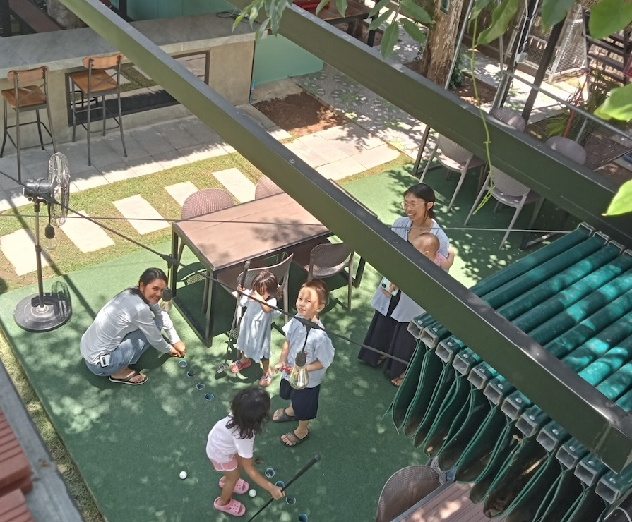
Pictures from our ACTION team retreat
Praise God for all of the students who have invested long nights, tired mornings, and years of their lives in order to know God through His Word and be better prepared to serve Him in His Church.
Please pray for the students as fourth year students are getting ready to graduate, and deciding how to spend their lives. Pray that they would lay down every ambition and turn away from every temptation for self-gain or promotion, and seek instead His Kingdom and His righteous. Pray for God’s provision as they head out to a Church that on the whole lacks well-designed internship programs, associate pastor positions, or for the most part any support or mentorship for them at all. Pray that they would be bold but humble, diligent but dependent, as they begin this next stage of life.
Some Praises at Church
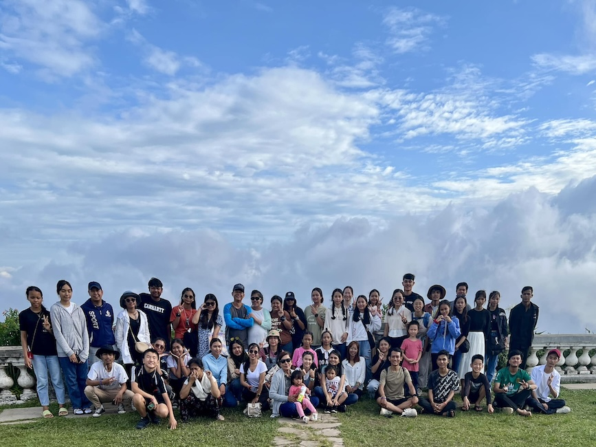 On a church retreat with RCC, the presbyterian church that we regularly attend
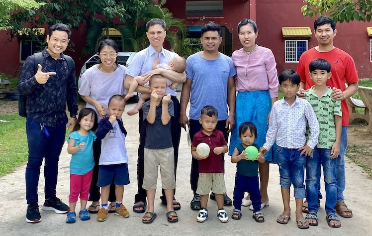 We’ve visited Church of Mercy, a sound church in the province that also translates resources to Khmer, and are always encouraged by our time there.
Lately there have been a string of encouragements, and reminders that God is still at work here in Cambodia and around the world. To be clear, these aren’t individuals whom we can claim any credit for their conversion (as if there were ever any), but we wanted to share this just as an encouragement.
We have been encouraged overall at our time with this church. It’s a little bit different for us worshiping at a Presbyterian church, but we have been encouraged more than ever about our unity in Christ that transcends all barriers (including denominational barriers)!
Upcoming Furlough
At the end of November, we will be visiting the States in order to spend time and reconnect with our supporting churches, as well as to rest some before we launch off for Ratanakiri next year.
Tentative Dates:
- Arrive in Spokane on Nov 28th
- Leave Spokane for Seattle 2nd or 3rd week of February.
- Leave Seattle early March. Visit friends in Oregon along the way.
- Stay around 1-1.5 weeks in the Bay Area
- Arrive in LA end of March (around Mar 21st)
- Somewhere in here, we want to try to visit family in Georgia.
- Return to Cambodia end of May 2026
Encouragement from PPBS Students
As we wrap up our time with PPBS, we thought we would share some encouragement from the students there.
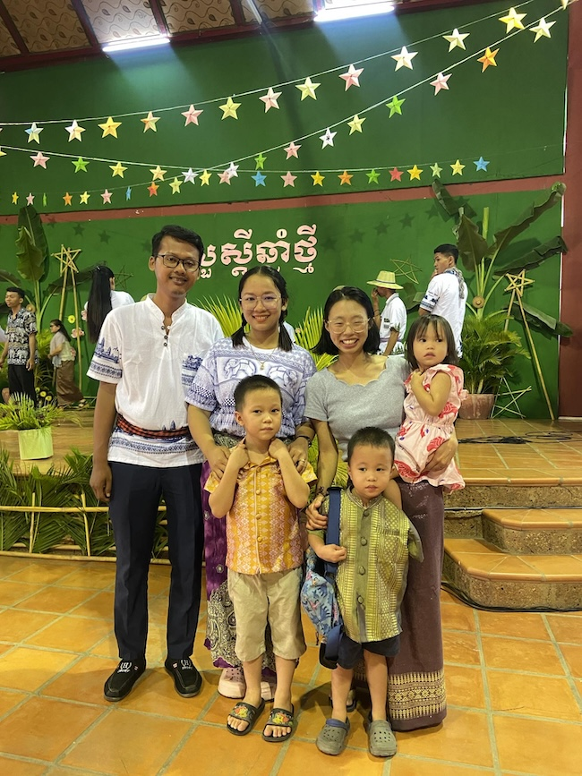 Testimony from a recent graduate, Pagna (left) – pictured with his wife and our family for Khmer New Year
Recent graduate Pagna shared about The Family Life of a Christian Leader, a book he read for the “Marriage and Family” course he took at PPBS. The book was translated last year by Plovpit (Action Cambodia’s translation team).
The Family Life of a Christian Leader is a book that provides valuable insight into the unique challenges and blessings that come with being a Christian leader in the context of family life.
- Scriptural Foundation: This book emphasizes the importance of strengthening family life in biblical principles, such as love, forgiveness, and mutual respect.
- Practical Advice: This book provides practical advice and strategies for balancing the needs of leadership with the responsibilities of family life.
- Practical Stories: The author shares personal stories and stories from other Christian leaders to illustrate the main points, will give me encouragement facing problems.
- Spiritual Growth: This book helped me to explore how family life can be a motivating factor for spiritual growth and change for both Christian leaders and my family members.
For more testimonies, you can see the PDF below. They invited me to share some about spiritual growth in the context of theological education as well.
Prayer Requests
- It is bittersweet as we plan to move to Ratanakiri. All of our time in Cambodia has been in Phnom Penh with our ACTION teammates and the Church here. There is a part of us that feels it will be difficult to be in a new place and new church family all over again, but we trust God’s plan and are very much excited to serving in Ratanakiri. Pray for wisdom as we navigate saying goodbyes and keeping up some relationships as well.
- Getting ready for furlough – God’s guidance doing homeschool during furlough, visiting the Church and family; we pray our time would be fruitful and encouraging for brothers and sisters as well as non-believers we will be spending time with.
Especially for our children, who are getting older, as they think through differences between America and Cambodia, things they like, dislike, meeting many different people whom they are “supposed to” know (family, etc.), but still feeling distant, relationships, languages, having certain attractions or aversions to cultural differences etc. God’s wisdom for us as parents in this regard as well. - Faithfulness each day with what God has put before us, trusting Him for every interaction, decision, and activity not knowing when the Master will call us home or what His plans for us are.
- There have been a number of sick people in the hospital in the past few weeks, as well as a couple deaths - one, the sister of our helper, the other, a young 11-year-old boy who drowned in Ratanakiri (his parents are believers and part of the Jarai church, an ethnic minority). Pray that these opportunities would allow for the Gospel of Christ to shine through feelings of hopelessness and suffering.
Bonus Life Happenings
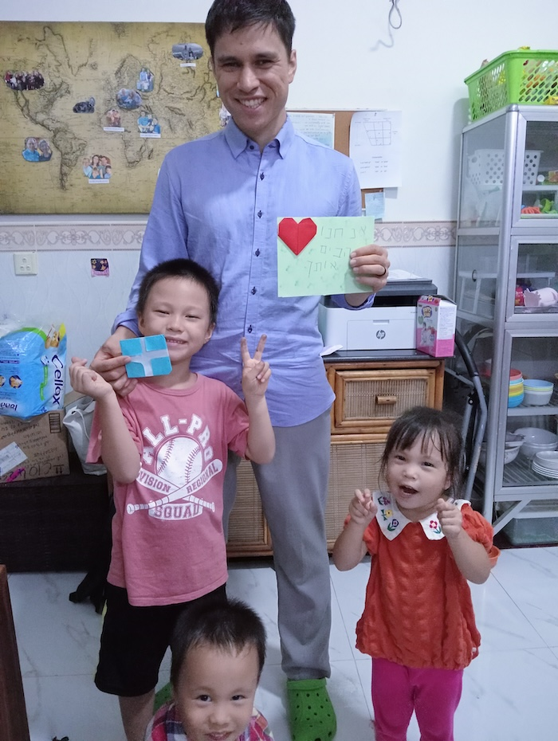 Father’s Day 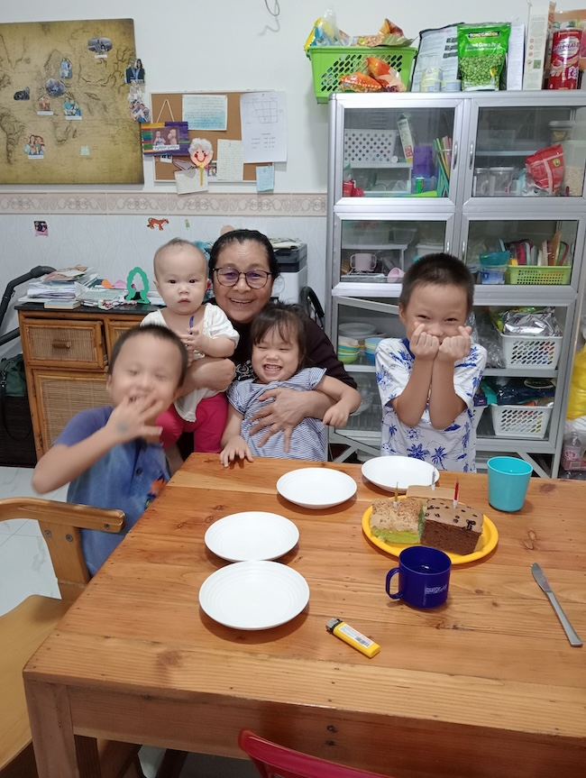 Our wonderful helper’s birthday 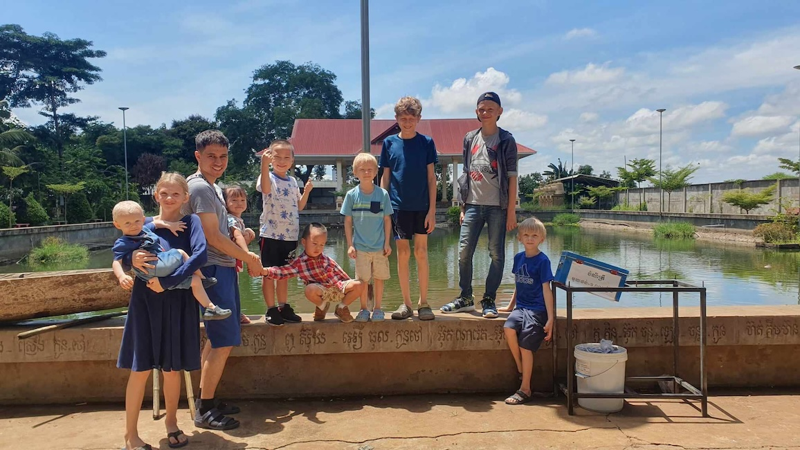 Visiting new teammates outside Phnom Penh 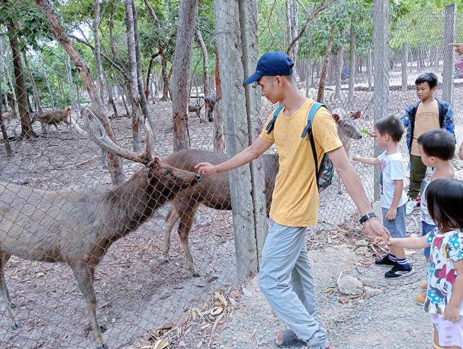 A trip to the Zoo with PPBS students 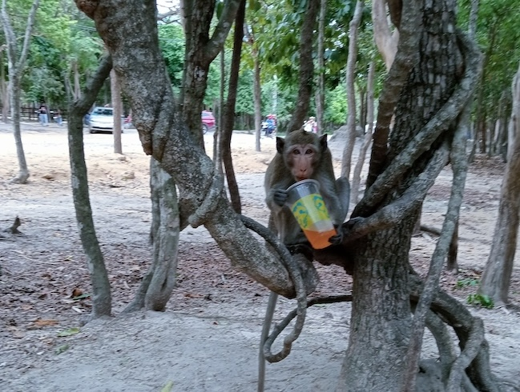 This zoo has TONS of wild monkeys, some of which are super bold and come very close to humans. This one snagged an abandoned soda. 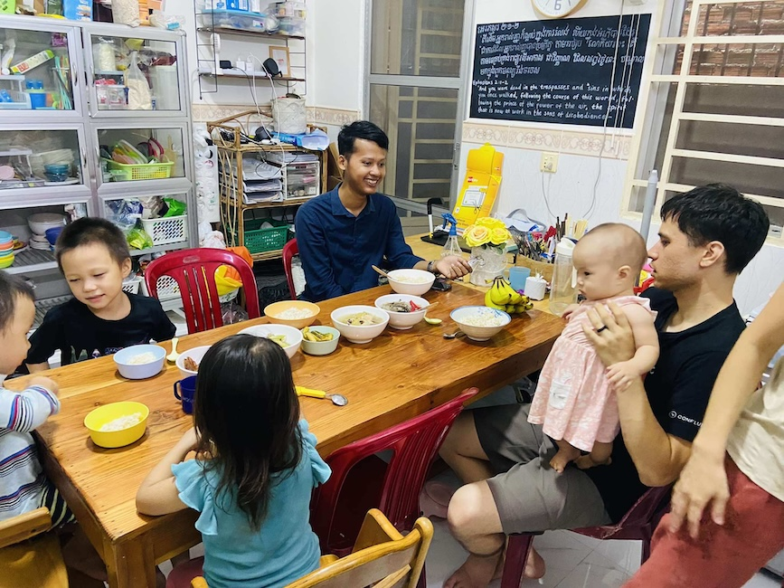 A PPBS student brings his family to our home for a visit 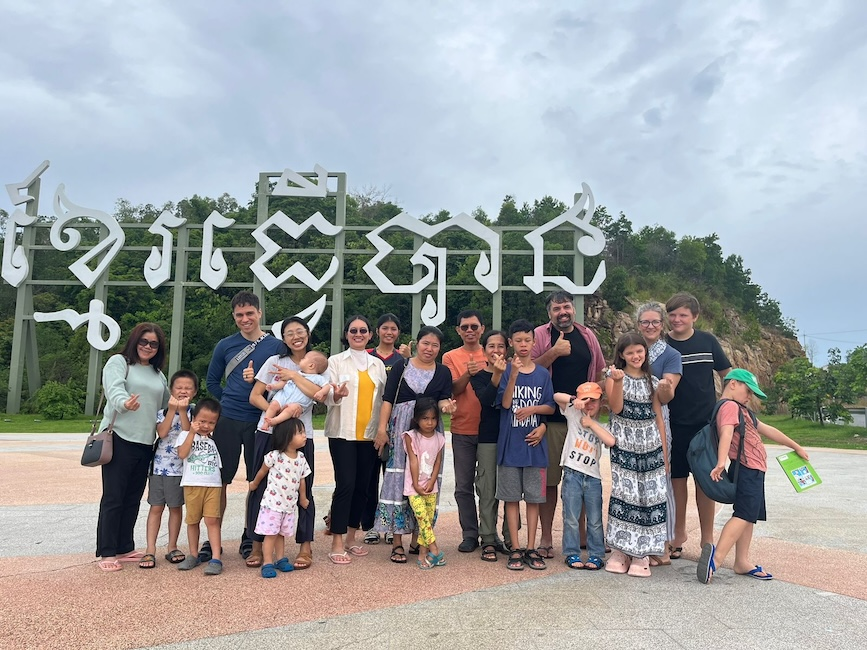 PPBS Faculty had a retreat to Sihanoukville 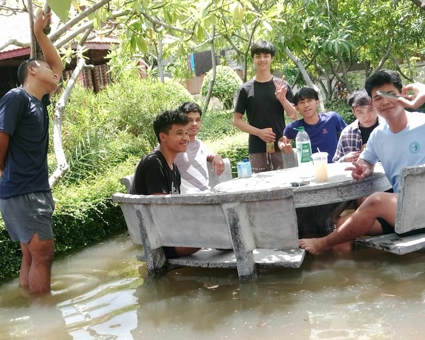 Rainfall on a particularly heavy day led to major flooding at the Bible School as well as many homes. These students are still very cheery! 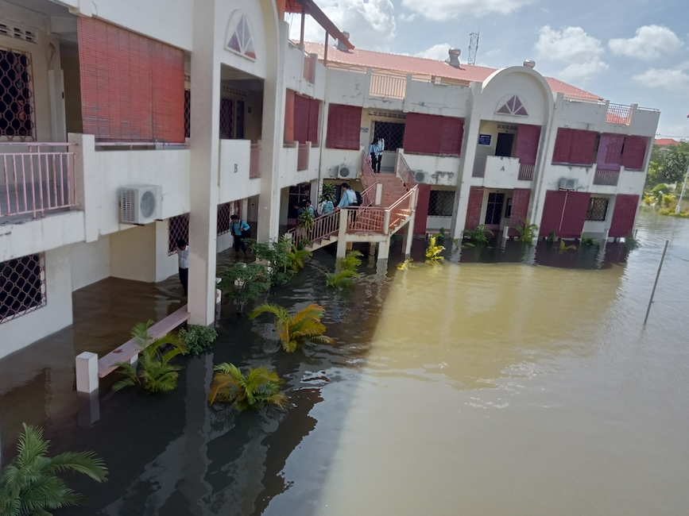 The flood made PPBS look like a lake! Some people were actually fishing for dinner that day! 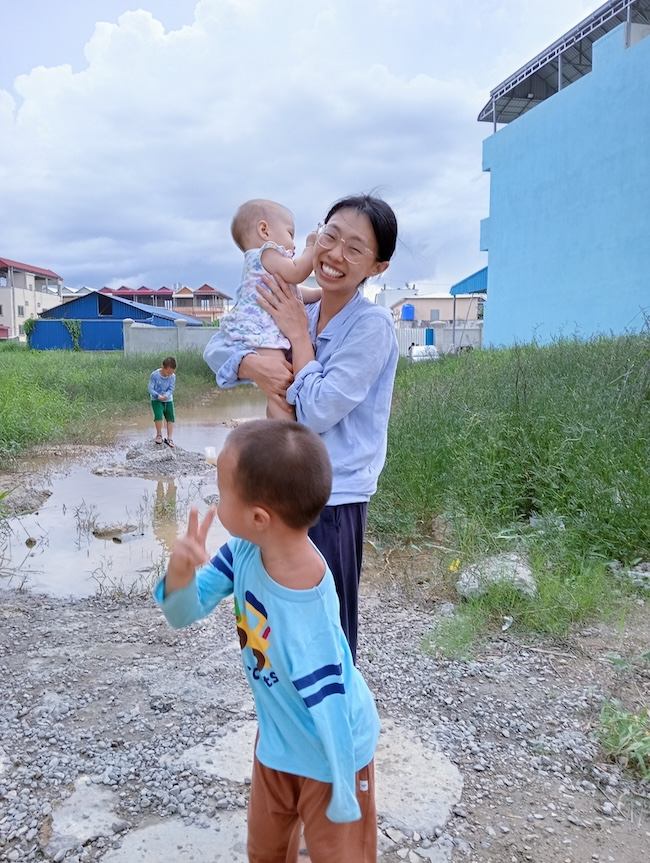 Out in our neighborhood 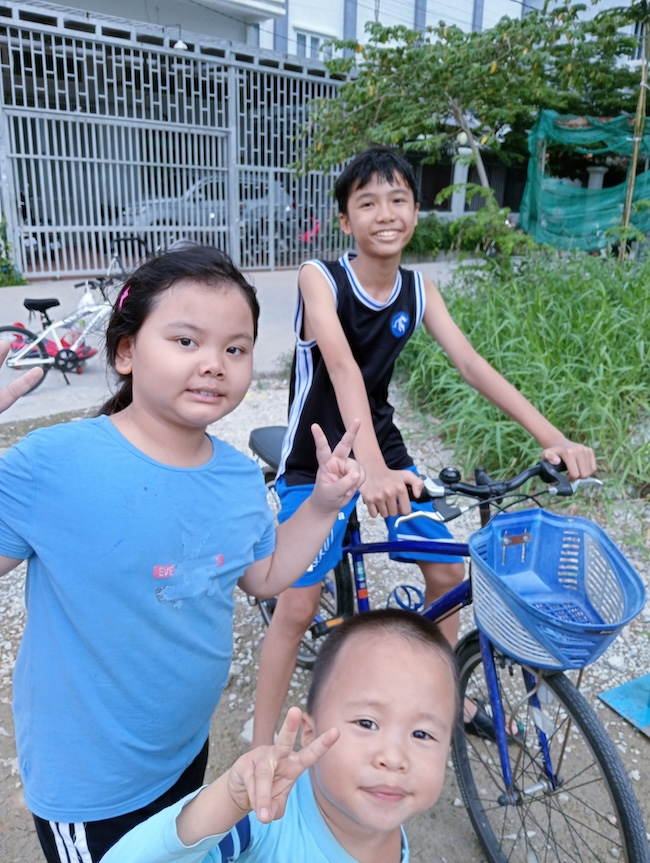 Precious children in our neighborhood and our precious Samuel 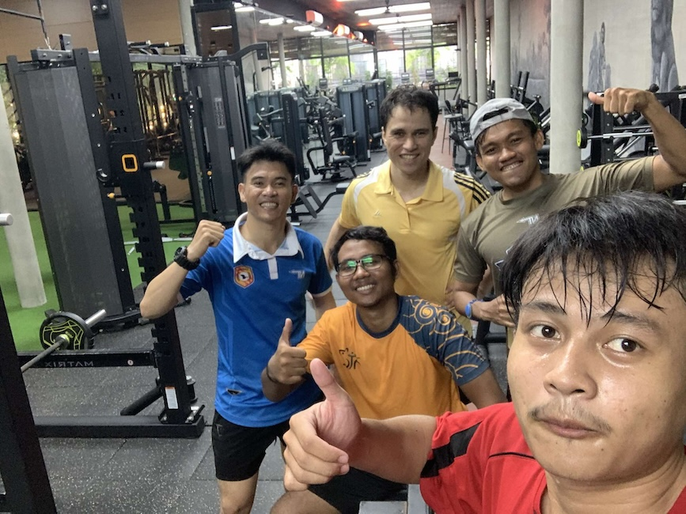 A small group Ryan has been part of for about 6 years recently ended